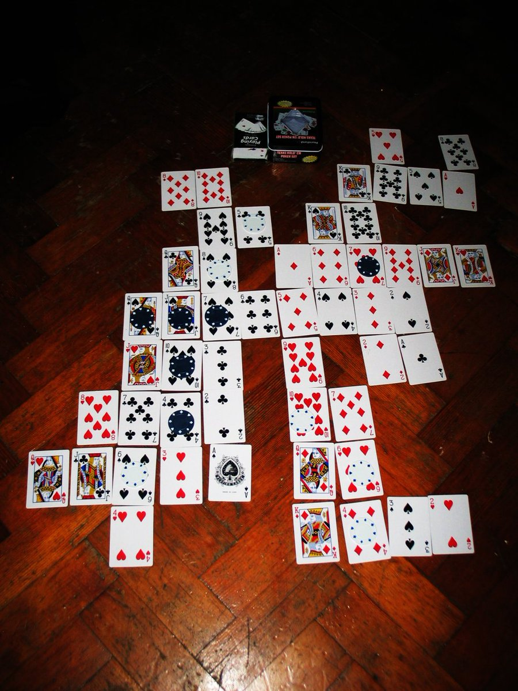
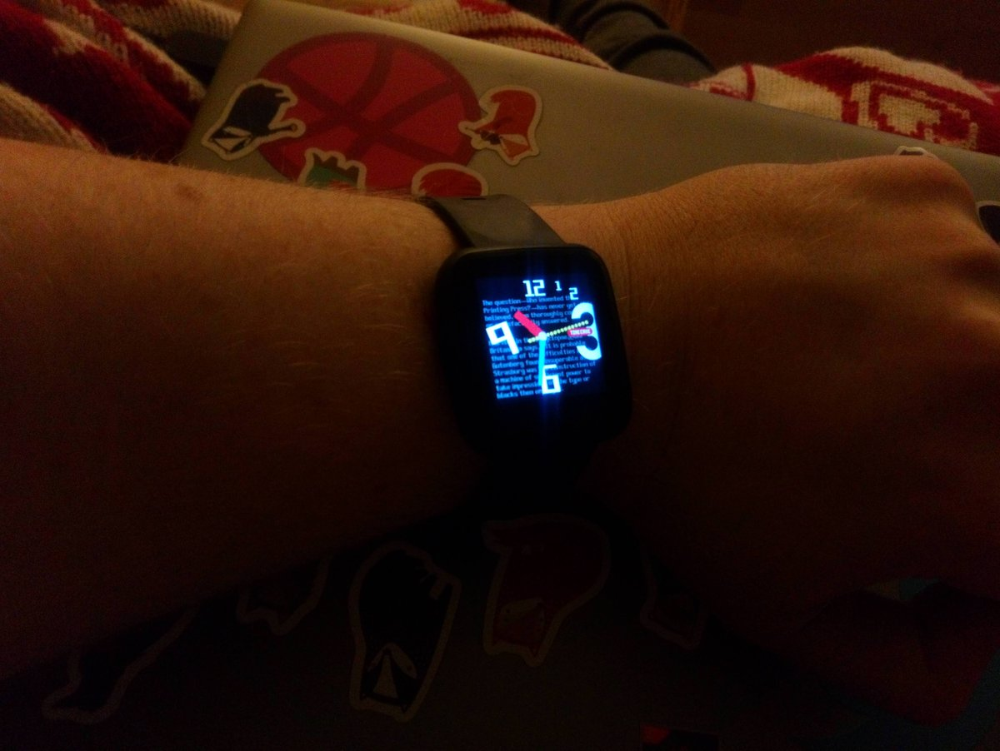

13 years ago I woke up with this game design almost fully formed in my head http://xixs.com/agincards That may sound unlikely but I had been thinking/trying to design a simple card solitaire placement game like it since I was a kid. So I guess it just finally clicked :)

https://twitter.com/RaymondDoerr/status/1218317590721957888 @RaymondDoerr Exactly, there are a large amount of puzzle designs created, tested and honed to the point that their final form could easily be created for hardware 10 years out of date.
It is somewhat saddening how little respect there is for that sort of game design work.
https://twitter.com/RaymondDoerr/status/1218285213501075457 @RaymondDoerr In the late 70s and early 80s we had computers capable of Tetris or Match3 style puzzle games but these did not exist in any form until the mid 80s at the earliest.
That's some really easy pickins :)
https://twitter.com/wetgenes/status/1218254164259758080 @DavidGlaude @pimoroni @adafruit Glancing at the code it would be 25% faster if you just switched to 444 from 565 per pixel and I would consider adding simple dithering to reduce the color resolution loss from doing that.
https://twitter.com/DavidGlaude/status/1218248377617539072 @DavidGlaude @pimoroni @adafruit Yup, that looks like partial updates :)
I think you could also dynamically switch between 444,565,888 color modes depending on the size of the current frame update.
You are only choosing the transport format, they all update the same back buffer so can be intermixed.
https://twitter.com/wetgenes/status/1218211392714690560 @pimoroni With a PI the obvious speedup would be to render to a local buffer and then make sure to only squirt areas that have changed over the SPI.
https://twitter.com/pimoroni/status/1218204359219204098 @pimoroni This looks like the same ST7789 controller as on the #PineTime but the PI has much faster SPI speeds. You can see some recent notes I made about driving that chipset with an NRF52 at http://xixs.com/blog/2020-01-16-pinetime-lcd-driver-notes/ and the code might be useful if you want to drive it yourself.
Some notes about driving the #PineTime LCD as fast as we can http://xixs.com/blog/2020-01-16-pinetime-lcd-driver-notes/ @thepine64
I declare phase one of the TimeCake project complete as we have a working @thepine64 watch :)
Code etc can be found at http://github.com/xriss/timecake

https://twitter.com/engineers_feed/status/1216417000823623680 @engineers_feed Reminds me of
https://www.instructables.com/id/The-Incredible-Flying-Paper-Tube/
Which I think was originally from Omni Magazine?
At least I remember learning how to make them from a strange magazine in the 80s and Omni is totally a strange magazine from the 80s :)
The meetup page for the #Bradford #GameDev meetup in a pub never really helped so we are replacing it with
https://groups.io/g/badonkadonk
PLZ to be signup if you want Badonkadonk event reminders in your inbox.
https://twitter.com/andrewcrawshaw/status/1216033504598876167 @andrewcrawshaw @developconf I think we should organize a bi yearly local game dev meet up crash/raid event for the UK.
Every 6 months a different local dev meetup that was going to happen anyway is chosen and everyone is encourageed to travel there from around the country for one glorious night.
:)
https://twitter.com/thomasforth/status/1216012930904469504 @thomasforth That reminds me, I have yet to see a PC attachment that guides the hot air coming out the back and redirects it at your hands to keep them warm.
Technically, something that makes as much sense as yellow tinted gamer glasses.
There has to be a market in exhaust pipe routing :)
"The time needed to generate one random byte of data is unpredictable" -- Objective Product Specification.
Easy tiger, I only wanted one source of entropy.
@magic_bane The other link I gave is direct to a ROM that plays in browser :)
Modern technology, ehh.
https://twitter.com/wetgenes/status/1215749402129829888 Probably all above board, I mean obviously the place I was working for exploded shortly after making it, as games companys tend to do. And its a licensed asset swap sort of thing. Anyway here are two versions for you to compare.
I made this GBA one.
Here's a fun one. So I'm watching this video on the tubes which is every ps2 game released 10 seconds each.
https://www.youtube.com/watch?v=ixeRUJQ5yPc
In the background right and I glance up only to see this random game that looks exactly like an asset swap of one of the games I remember making.
Would you like to see Doug Jones take a window to the Knee?
https://www.youtube.com/watch?v=osoA6gEK4-Y&t=1440
No?
How about Doug Jones taking a tire iron to the knee?
https://www.youtube.com/watch?v=osoA6gEK4-Y&&t=4130
It turns out that this movie, (Night Angel 1990) is all about knees.
Good News EVERYONE!
Tonight is the first #Bradford #GameDev meetup in a pub of 2020! From 7pm to 9pm* upstairs at The Turls Green, all welcome!
See http://xixs.com/badonkadonk for more deets and dates.
- we are usually there after 9pm but you have permission to leave early :)